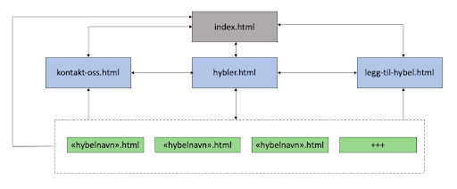

Webtek P2
Gruppe 50 - Isak, Ingrid, Magnus & Tale
Vår klient
Vår klient er et fiktivt selskap, “Cribadvisor”. Cribadvisor er en tjeneste som lar brukere, primært studenter, sammenligne ulike kollektiv for å skape sosiale sammentreff. Selskapet er i oppstartsfasen og trenger at vi står for alt fra design til den tekniske løsningen.
Hensikt
Cribadvisor er en tjeneste som lar brukere sammenligne ulike kollektiv for å skape sosiale sammentreff. Nettsiden skal være et sted hvor brukere lett kan navigere seg fram til den informasjonen de ønsker å finne. Målet er at brukeren skal få tilstrekkelig informasjon om ulike kollektiv for å kunne ta et valg om hvilket kollektiv personen ønsker å besøke. Avgjørende faktorer kan være f.eks. beligenhet, event-type eller plass.
Publikum
Sluttbruker er studenter i Trondheim som ønsker å sosialisere seg med andre medstudenter. De gjør dette med å finne kollektiv som de kan besøke. En annen type bruker er studenter som vil åpne kollektivet sitt for besøk gjennom tjenesten. Siden det er en stor målgruppe må det være enkelt å bruke nettsiden.
Struktur
Første siden brukeren kommer til skal være vår “landing page” og er filen “index.html”. “index.html” skal kunne nås fra alle områder på nettstedet via nav-baren. Nav-baren skal inneholde alle sidene markert i blått over, i tillegg til “index.html” er disse nettstedets ulike hovedsider og skal kunne nås uansett hvor på nettstedet bruker er. Når bruker står i “hybler.html” skal bruker se en oversikt over alle hyblene nettstedet har publisert. Hver av disse hyblene skal ha hver sin egne side som viser bruker informasjon om denne hybelen. Antall hybler og innhold er ikke definert enda, men alle disse vil ligge i den samme kategori. I figuren over er disse vist som “hybelnavn.html”. I figuren over illustrerer pilene som går fra det stipplede rektangelet navigasjonsmulighetene hver enkelt av sidene under denne kategorien har.
Design og opplevelse
Navbar
Siden skal ha en ryddig og oversiktilig navbar som ligger øverst på siden. Denne skal inneholde de ulike undersidene på nettsiden, og også inneholde en logo. Den siden brukeren er på skal ha en annen farge enn resten av elementene i nav-baren for å synliggjøre hvor man er på nettsiden.
Fargevalg
Vi har bestemt oss for å ha et gjennomgående fargetema på hele nettsiden for å skape et mer proffesjonelt og behagelige inntrykk. Fargekodene vi har bestemt oss for å bruke gjennom nettsiden er:
- Farge 1
- Farge 2
- Farge 3
- Farge 4
Hjemmeside
Førstesiden skal ha en en tydelige overskrift for å vise brukeren av siden at han har kommet til nettsiden til CribAdvisor. Høyt opp på siden skal det være en bildeserie med automatiske overganger. Dette skal vi ha for å skape mer liv og bevegelse i førstesiden, samtidig som det lar oss promotere mer av innholdet som ligger på andre sider på nettstedet. Her skal vi ha knapper som sender brukeren til hybelen brukeren ser bilde av for å føre til at brukeren kommer seg videre til innholdet om hyblene lettere.
Førstesiden skal inneholdet flere slagord og mer tekst som handler om hva CribAdvisor er. Ordtakene skal være innenfor hva CribAdvisors er, og samtidig bidra med å løfte brukerens inntrykk av tjenesten. Under overskriftene skal det være mer forklarende tekst som bygger oppunder overskriften.
Overskrift
Tekst
Overskrift
Tekst
Plan
Filstruktur
I og med at dette er et prosjekt med relativt stort omfang ønsker vi en tydelig plan over hva som skal gjøres før vi setter igang med utviklingen av siden. Først har vi en foreløpig plan over filstrukturen til siden. Vi ønkser at denne skal være ryddig og godt organisert. De største html-filene ligger øverst i strukturen, så har vi lagt de mer spesifikke i egen mappe. Vi ønsker å bruke flere stilark, hvor det som er felles for alle sidene, som f.eks navbar, font og fargevalg, ligger i eget stilark. Og så ønsker vi eget stilark for hver enkelt side utenom dette, for å holde det mer oversiktlig. Alle bildene vil ligge i en egen mappe for alle bildene, og her vil vi igjen dele bildemappen opp i flere undermapper ut ifra hvor de skal brukes. Alle script blir på lik linje som det over også liggende i en egen mappe for script.
Liste over mapper og filer:
- index.html
- kontakt-oss.html
- legg-til-hybel.html
- hybler.html
-
hybler/
- "hybelnavn1".html
- "hybelnavn2".html
- +++
-
styles/
- main.css
- kontakt-oss.css
- legg-til-hybel.css
- hybler.css
- hybel.css
-
img/
-
hybler/
-
hybel1/
- img1
- img2
- img3
-
hybel2/
- img1
- img2
- img3
- +++
-
hybel1/
-
others
- img1
- img2
- img3
- +++
-
hybler/
Arbeidsfordeling og frister
| Fil | Merknad | Ansvar | Frist |
|---|---|---|---|
| index.html | Script med slideshow + ordtak og innhold om CribAdvisor | TBA | TBA |
| kontakt-oss.html | Kontaktinformasjon og mulighet for å bruker å sende inn melding via kontaktskjema. | TBA | TBA |
| hybler.html | Script som lister opp alle hyblene og info om disse (hybler.js). | TBA | TBA |
| legg-til-hybel.html | Input-skjema som lar bruker registrere sin hybel opp til nettstedet. | TBA | TBA |
| "hybelnavn1".html | Side som presenterer innhold om den valgte hybelen. Én side per hybel. | TBA | TBA |
| main.css | Felles stilark for alle områdene | TBA | TBA |
| kontakt-oss.css | Stilark for kontakt-oss.html | TBA | TBA |
| legg-til-hybel.css | Stilark for legg-til-hybel.html | TBA | TBA |
| hybler.css | Stilark for hybler.html | TBA | TBA |
| hybel.css | Stilark for hybel.html | TBA | TBA |
| hybler.js | Script som lister opp alle hyblene i en liste | TBA | TBA |
| kontakt.js | Script som lager en pop-up boks ved kontakt til en hybel | TBA | TBA |
| slideshow.js | Script for slideshow på index.html | TBA | TBA |
| validator.js | Script for å validere input fra bruker i kontakt-oss.html/legg-til-hybler.html | TBA | TBA |
| vurdering.js | Script på “hybelnavn.html” som skal la bruker legge inn en vurdering og rating av en hybel. | TBA | TBA |